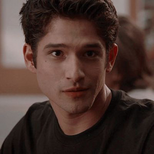
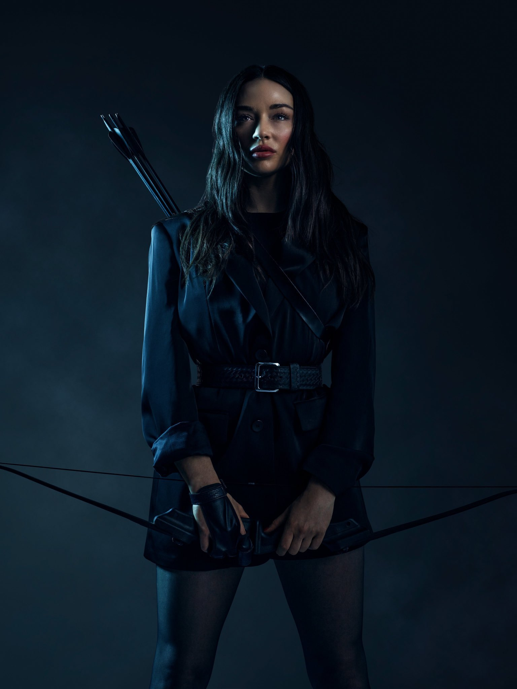

-
SCOTT MCCALL
Descrição
Scott, um adolescente comum com asma e habilidades altéticas abaixo da média, foi mordido por um ex-lobisomem alfa chamado Peter Hale e se tranformou em um lobisomem. Inicialmente, ele ficou assustado com suas novas habilidades e procurou uma maneira de se curar. Desde então, ele passou a aceitar sua natureza sobrenatural e tentar usar suas habilidades para proteger seus amigos e sua família de ameaças sobrenaturais. Ele conta com o apoio de seu melhor amigo, Stiles Stilinski. Além disso, ele se apaixona por Allison Argent, uma caçadora. Com o tempo, ele se revela um Alfa, mesmo sendo um beta. Sua pureza interior o transforma em um verdadeiro alfa. Ele faz tudo o que pode pela alcateia e teme se tornar um monstro, assim como Peter.
-
STILES STILINSKI

Descrição
Mieczyslaw "Stiles" Stilinski é um dos personagens principais de Teen Wolf. Ele é apresentado na série (logo no primeiro episódio) como o melhor amigo de Scott McCall. Após Scott ser mordido por Peter Hale e receber ajuda de Derek Hale para se tornar um lobisomem, Stiles também se torna um mentor importante para Scott. Desde o início da série, Stiles tem uma paixão por Lydia Martin. Na sexta temporada, ele e Lydia começam a namorar e continuam juntos. No entanto, entre a quarta e quinta temporada, Stiles namora Malia Tate. Ele é filho do xerife da cidade, o que é benéfico para o bando, já que seu pai está sempre presente. Stiles é o único humano do grupo e é considerado inteligente, pois é o responsável por elaborar os planos. Além disso, ele é muito sarcástico e tenta aliviar as situações tensas que ocorrem com Scott. Por esse motivo, é sempre o segundo no comando, depois de Scott.
-
DEREK HALE

Descrição
Ele inicialmente era um mentor para Scott McCall, mas amizade se modificou depois que Derek se tornou um Alfa e começou a fazer escolhas que Scott considera imoral. Apesar disso, Derek ainda é leal e continua a proteger e lutar com Scott contra as várias ameaças supernaturais.E descobri que tem um filho depois de anos, e lutar junto com Scott e seu bando e depois de muita luita DEreck morre para salvar e Scott e seus amigos.
-
LIAM DUNBAR

Descrição
Liam Dunbar é um novo calouro que frequenta Beacon Hills High School. Liam é um jogador de Lacrosse talentoso, arrogante e bonito, mas tem problemas graves de raiva. O padastro de Liam, Dr. Geyer, um medico do hospital Beacon Memorial que ensinou ele a jogar lacrosse. Ele havia sido transferido para Beacon Hills High depois de ter sido expulso de Devonfort Prep, depois de violentamente danificar um dos carros de seus professores com um pé de cabra, em resposta a uma bronca dada pelo professor. Liam foi diagnosticado com T.E.I e é o primeiro lobisomem Beta de Scott.
-
LYDIA MARTIN

Descrição
Lydia mudou bastante depois que conheceu Allison Argent, Scott McCall e Stiles Stilinski. Ela era, pelo menos aparentemente, superficial e mimada, o que, na verdade, era uma mentira para esconder um QI brilhante. Ela entende muito de química e latim. A farsa, assim como sua relação com Jackson Whittemore, fazia parte de um plano cuidadosamente orquestrado para manter sua popularidade na Beacon Hills High School. Depois de algum tempo, ela descobriu ser uma Banshee, parou de tentar esconder seu QI e, após entrar em estado catatônico, foi treinada por Meredith Walker para controlar seus dons dentro de seu subconsciente. Após acordar de seu estado catatônico, Lydia conseguiu mostrar que podia usar seus gritos como uma bala de uma arma. Na sexta temporada, foi revelado que Lydia e Meredith não eram as únicas Banshees existentes na série. É revelado na sexta temporada que Lydia está apaixonada por Stiles Stilinski desde o episódio 3x11. Após se beijarem pela primeira vez no episódio 6x10, eles começam a namorar. Stiles e Lydia permanecem juntos.
-
ALISSON ARGENT
Descrição
A sua vida familiar era difícil. Sua mãe tinha explosões de raiva. Seu pai era superprotetor e Allison teve uma fase rebelde. Ela era melhor amiga de Lydia Martin. Também teve como amigos Jackson Whittemore e Stiles Stilinski. Ela estava envolvida com Scott McCall, porém depois de algum tempo se envolveu com Isaac Lahey. Allison morreu nos braços de Scott depois de tentar salvar Lydia de um espírito maligno. E anos depois de algo sobrenatural que aconteceu, ela aparceu viva, mas sem memoria do que viveu com Scott o seu primeiro amor, e depois de muita resistência de Scott ela lembrou de tudo e eles ficaram juntos novamente.